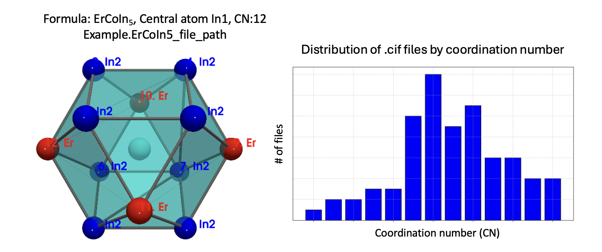

cifkit#


cifkit offers higher-level tools for coordination geometry and atomic
site analysis from Crystallographic Information Files (.cif), plus
OLED (Oliynyk elemental data) for composition featurization in machine
learning.
How does cifkit benefit scientists?#
Solid-state chemistry and materials informatics repeatedly need the same steps: read crystallographic CIFs, build a reliable supercell, compute interatomic distances and neighbor shells, determine coordination, and turn the result into numbers for visualization, structure-type work, or machine learning. Doing that by hand, or reimplementing it for every project, does not scale when you have thousands of files.
cifkit is written so scientists can focus on the science - not on
boilerplate geometry code.
Here are the main goals of cifkit for the scientific community:
Help scientists extract physics-based structural features from real CIFs (distances, coordination, polyhedron metrics, bond fractions) that can be plotted, compared, or fed into ML models.
Make supercell construction and neighbor search reliable in Python, so site environments near cell boundaries are not wrong or missing.
Support high-throughput work over folders of CIFs - from a few structures to tens of thousands - with a small, scriptable API rather than a one-file GUI workflow.
Work with real database CIFs from many sources, not only one vendor format. Exports differ in headers, author loops, and labels;
cifkitdetects the source and applies tested preprocessing so the same pipeline can mix ICSD, COD, PCD, and related formats.
Multi-source CIFs (ICSD, COD, PCD, and more)#
Database dumps are messy in different ways. cifkit sets db_source
from content fingerprints and, when preprocessing is on, fixes known
quirks before gemmi/parsing (for example ICSD copyright first lines, PCD
author loops and site labels). Sources recognized in code and covered by
tests include:
|
Database |
|---|---|
ICSD |
Inorganic Crystal Structure Database |
COD |
Crystallography Open Database |
PCD |
Pearson’s Crystal Data |
MP |
Materials Project-style CIFs (pymatgen export) |
CCDC / CSD |
Cambridge Structural Database exports |
MS |
Materials Studio |
Unknown |
Still loadable when the CIF is otherwise valid |
So a folder from ICSD plus COD plus PCD can go through one
CifEnsemble path - something many generic CIF readers leave to you to
debug per source.
In published structure-featurization workflows that use cifkit as the
geometry engine (SAF
together with
CAF),
scientists have processed tens of thousands of CIFs and built training
tables on the order of a million feature rows for explainable
machine-learning models of solid-state structures
(Digital Discovery). That scale is
what the supercell, neighbor, coordination, and multi-source preprocess
APIs are designed for.
Capability |
What |
|---|---|
Interatomic geometry |
Shortest distances, site-pair and bond-pair tables, ordered neighbor lists |
Coordination |
Four gap-based methods (d/dmin, CIF-radius sums, Pauling radius sum, …), best-method polyhedra, bond fractions, packing efficiency |
Supercells |
Default 3×3×3 supercell (configurable) for consistent neighbor search |
Multi-source CIFs |
Detects ICSD, COD, PCD, MP, CCDC, MS; source-specific preprocess (tested) |
Many CIFs |
|
Structural features for ML |
Geometry backend for SAF (with CAF for composition); elemental tables via OLED when needed |
Small API |
|
cifkit is not a replacement for interactive viewers such as VESTA for
browsing a single structure, and it is not a DFT package. It is aimed at
batch geometry and structural featurization that experimental and
data-driven groups actually run. If that work is useful in your research,
consider citing the matching papers under Publications below.
Two data sources (keep them separate)#
Source |
What it is |
Tutorial |
|---|---|---|
|
Distances, coordination numbers (four gap methods), polyhedra from the crystal structure |
|
OLED table |
Curated elemental property rows (22 × 76) for composition / ML - not values read from the CIF |
Built with scikit-package#
cifkit is developed and maintained with
scikit-package, which
offers tools and practices so scientists can turn research code into
reusable, reproducible packages - including documentation and
agent-friendly surfaces. If you use scikit-package for your own
software, please cite:
S. Lee, C. Myers, A. Yang, T. Zhang, Y. Xiao and S. J. L. Billinge, scikit-package: software packaging standards and roadmap for sharing reproducible scientific software, Digital Discovery, 2026. https://doi.org/10.1039/d6dd00121a
from cifkit import Cif, CifEnsemble, Example
from cifkit.sources.oliynyk import Oliynyk, Property # OLED table (not from .cif)
Docs: this site · Agents: llms.txt · API quick reference

Fig. 1 Polyhedron from one .cif (left) and CN distribution over many files
(right). Tutorials use the packaged GdSb demo offline.#
Quick start#
pip install cifkit
from cifkit import Cif, Example
cif = Cif(Example.GdSb_file_path)
print(cif.formula, cif.structure, cif.space_group_name)
GdSb NaCl Fm-3m
See Installation.
Common tasks (copy-paste)#
1) Parse physical features from a .cif#
from cifkit import Cif, Example
cif = Cif(Example.GdSb_file_path) # or Cif("file.cif")
print(cif.formula, cif.site_labels, cif.shortest_distance)
cif.compute_CN()
print(cif.CN_best_methods) # volume, packing_efficiency, CN per site
print(cif.CN_bond_fractions_by_min_dist_method)
Full walkthrough (how each CN method works + interactive polyhedron): Parse physical features from a .cif
2) Statistics over many .cif files#
from cifkit import CifEnsemble, Example
ensemble = CifEnsemble(Example.demo_cif_folder_path)
print(ensemble.file_count, ensemble.unique_formulas)
paths = ensemble.filter_by_formulas(["GdSb"])
Full walkthrough: Statistics over many CIFs
3) OLED - Oliynyk elemental data (composition / ML)#
OLED is a curated elemental property table (22 properties × 76
elements) from the Data in Brief dataset paper - not values parsed
from a .cif. Load with cifkit.sources.oliynyk.Oliynyk (not a separate
package; not related to OLED displays).
from cifkit.sources.oliynyk import Oliynyk, Property
from cifkit.parsers.formula import Formula
oled = Oliynyk()
print(len(oled.elements), "elements")
for prop in Property: # exact names - use as written
print(prop.name, prop.value)
print(oled.db["Si"][Property.AW])
oled.to_csv("oled.csv")
# Formula → stoichiometry-weighted mean feature vector
parsed = Formula("NdSi2").parsed_formula
total = sum(c for _, c in parsed)
features = {
prop.value: sum(oled.db[el][prop] * c for el, c in parsed) / total
for prop in Property
}
print(features["atomic_weight"], features["Pauling_EN"])
Exact Property members (do not rename): AW, ATOMIC_NUMBER,
PERIOD, GROUP, MEND_NUM, VAL_TOTAL, UNPARIED_E, GILMAN,
Z_EFF, ION_ENERGY, COORD_NUM, RATIO_CLOSEST,
POLYHEDRON_DISTORT, CIF_RADIUS, PAULING_RADIUS_CN12, PAULING_EN,
MARTYNOV_BATSANOV_EN, MELTING_POINT_K, DENSITY, SPECIFIC_HEAT,
COHESIVE_ENERGY, BULK_MODULUS.
Full walkthrough + searchable table: OLED
Tutorials#
Topic |
Page |
|---|---|
Parse physical features from a .cif |
|
Statistics over many CIFs |
|
OLED (Oliynyk elemental data) |
Publications#
When you use the package or the OLED table, consider citing the matching work (BibTeX: CITATION.txt · repo CITATION.cff):
You used… |
Consider citing |
|---|---|
CIF geometry / CN / polyhedra / |
cifkit - Lee & Oliynyk, JOSS 9, 7205 (2024). 10.21105/joss.07205 |
Structural / composition feature generation for ML (SAF, CAF) |
SAF + CAF - Jaffal et al., Digital Discovery 4, 548-560 (2025). 10.1039/d4dd00332b (also cite cifkit for the geometry engine) |
OLED elemental table / |
Dataset - Lee et al., Data in Brief 53, 110178 (2024). 10.1016/j.dib.2024.110178 |
Packaging / scikit-package stack (cifkit is built with it) |
scikit-package - Lee et al., Digital Discovery, 2026. 10.1039/d6dd00121a |
Geometry + feature generation |
cifkit + SAF/CAF paper |
Geometry + OLED |
Both cifkit + OLED dataset papers |
Notes (demos, tables, how to reproduce)#
Tutorial numbers are real outputs on the packaged demos (
Example.GdSb_file_path,Example.demo_cif_folder_path).Geometry tables are built with pandas → Markdown so you can copy the same pattern into a notebook.
OLED’s searchable table / CSV is the dataset table, not structure factors from a CIF file.
Soft cites live in the Publications table above and in CITATION.txt.
Getting help#
Maintained by Sangjoon Bob Lee (@bobleesj)